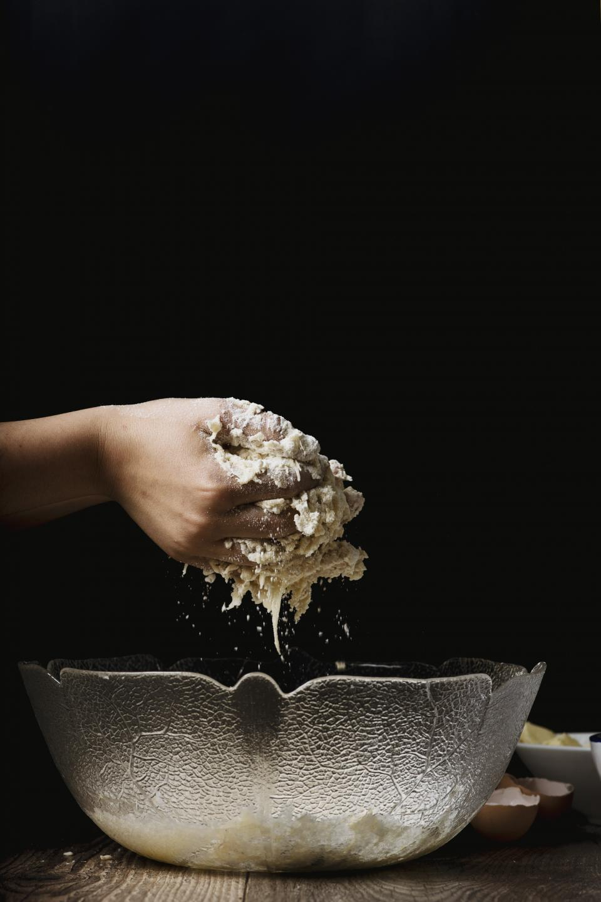
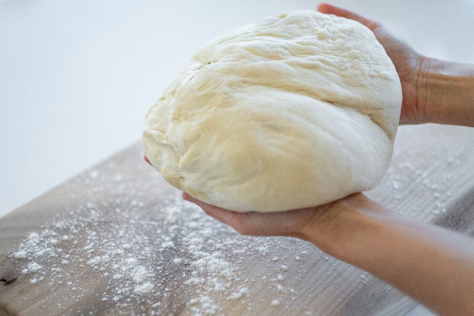
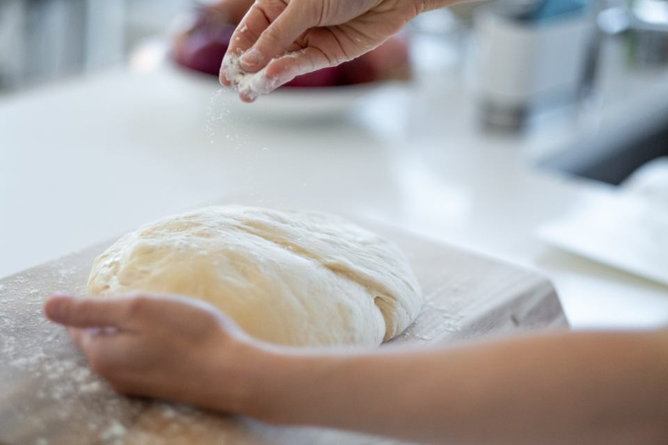

GRAN HEARD BREADのこだわり
フランスパン以外の“硬いパン”専門店として
GRAN HEARD BREADは、フランスパン以外の“硬いパン”を専門に扱うパン屋です。
日本でパンといえば、ふんわり柔らかいものやフランスパンを思い浮かべる方が多いかもしれません。けれど世界には、噛むほどに小麦そのものの風味が広がる、硬めで食べごたえのあるパンがたくさんあります。
実際にご来店いただいたお客様からも「フランスパン以外の硬いパンには馴染みがなかったが、食べてみると新しい発見だった」という声をいただいています。硬めで重いパンをじっくり味わいたいという方に、特に支持していただいているのが私たちの実感です。
食感へのこだわり
一口にハードブレッドといっても、その食感は一種類ではありません。
噛むごとにザクザクとした歯ごたえを楽しめるもの、外はパリッと香ばしく中はもちっと詰まったもの、そしてフォカッチャのようにふんわりもちもちとした系統のものまで。GRAN HEARD BREADでは、品ごとに異なる食感の違いを楽しんでいただけるよう、ハード系を中心に幅広いラインナップをそろえています。
※各商品の詳しい配合・製法についてはオーナー確認後に追記予定です。

※写真はイメージです

※写真はイメージです

※写真はイメージです
店内の雰囲気
パンを選ぶ時間も、心地よいひとときであってほしい。
そう考え、店内は落ち着いたトーンでまとめています。慌ただしさを感じさせない静かな空気の中で、棚に並ぶパンをゆっくり選んでいただけるよう整えました。「おしゃれで落ち着く」という声を、お客様から実際にいただいています。
幅広い客層への訴求
硬いパンの専門店と聞くと、大人向けのイメージを持たれるかもしれません。ですが、惣菜系やソフト系、甘い系のパンまで幅広くそろえているため、小さなお子様連れのご家族にも楽しんでいただいています。お子様が「美味しー」と頬張る姿も、店頭でよく見かける光景です。